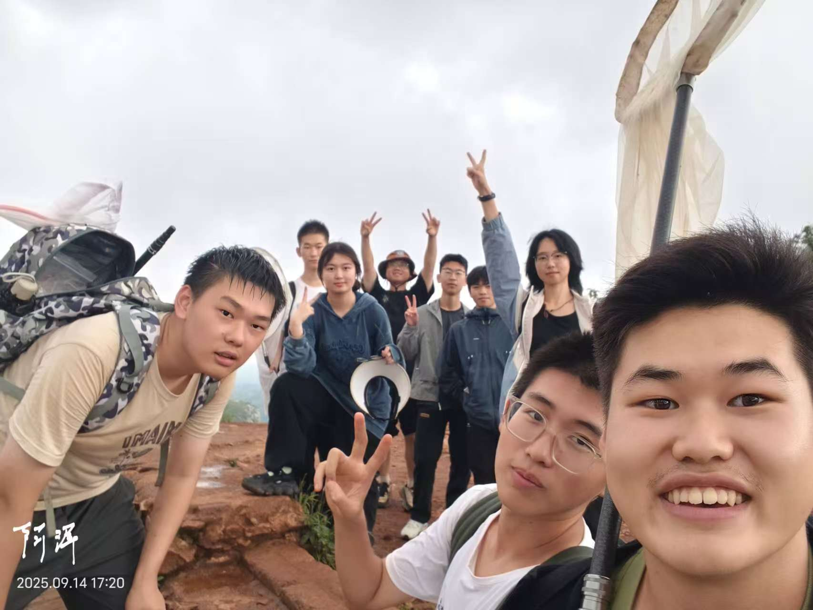
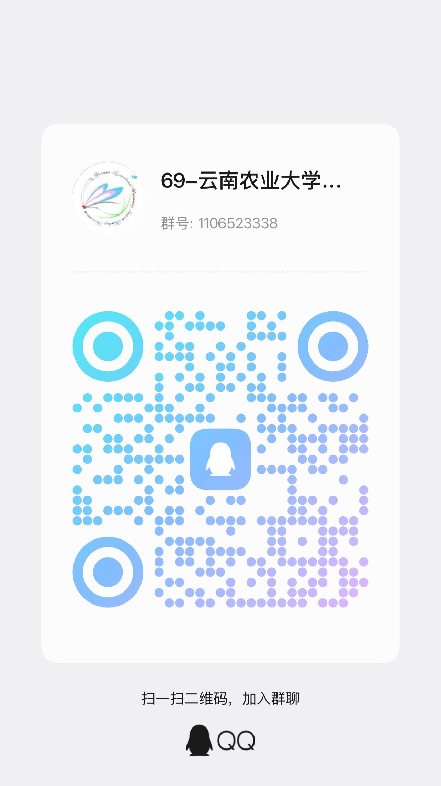

第一负责人
统筹社团整体运营，统筹活动、人员与对外对接工作。

01 / 关于社团
寻野昆虫社2017年成立，依托植物保护学院专业师资力量，由跨学院在校生组建，秉持“以虫为媒探自然，践行两山传生态”“亲近自然、科普昆虫、深耕博物”双重宗旨，是学校践行“两山理念”、开展生物多样性自然教育的核心特色社团。社团现有十余名核心成员，建立“老带新”一对一帮扶机制，搭建跨届社员联络渠道，着力培养兼具昆虫专业鉴定能力、科普宣讲能力与野外实践素养的青年队伍。
社团构建“野外实践+校内科普+校地联动+对外交流”四大活动体系，常态化组织长虫山、摩天岭等本土山林野采教学，定期举办昆虫分类、博物学专家讲座；依托社团嘉年华、耕读文化节、5·22国际生物多样性日开展标本展览、拓印手工、知识问答等沉浸式科普，同时走进城市树木园面向中小学生开展研学志愿教学，承接国际来访科普展示交流。2025-2026学年累计开展12场特色活动，覆盖师生、社区青少年、中外访客超1200人次。
社团打造专属科普文创体系，原创昆虫主题明信片、多版次亚克力钥匙扣，编撰《云农及其周边昆虫观察手册》。未来社团将持续深挖本土生态资源，迭代科普读物与文创产品，深化校地、对外科普合作，持续传播生物多样性保护理念，以青年博物力量助力区域生态文明建设。
02 / 部门组成
统筹社团整体运营，统筹活动、人员与对外对接工作。
协助第一负责人管理事务，分管野外实践与科普活动落地。
负责物资、标本、文创管理，统筹素材整理归档。
统筹协助第一、二和三负责人完成各项任务。
03 / 精彩瞬间
从长虫山野采到树木园研学，从标本制作到文创展示。点击照片，走近寻野昆虫社的博物足迹。
把野外观察、科普讲座、标本手作与文创助农连成一条完整的博物路径。
云南农业大学寻野昆虫社
